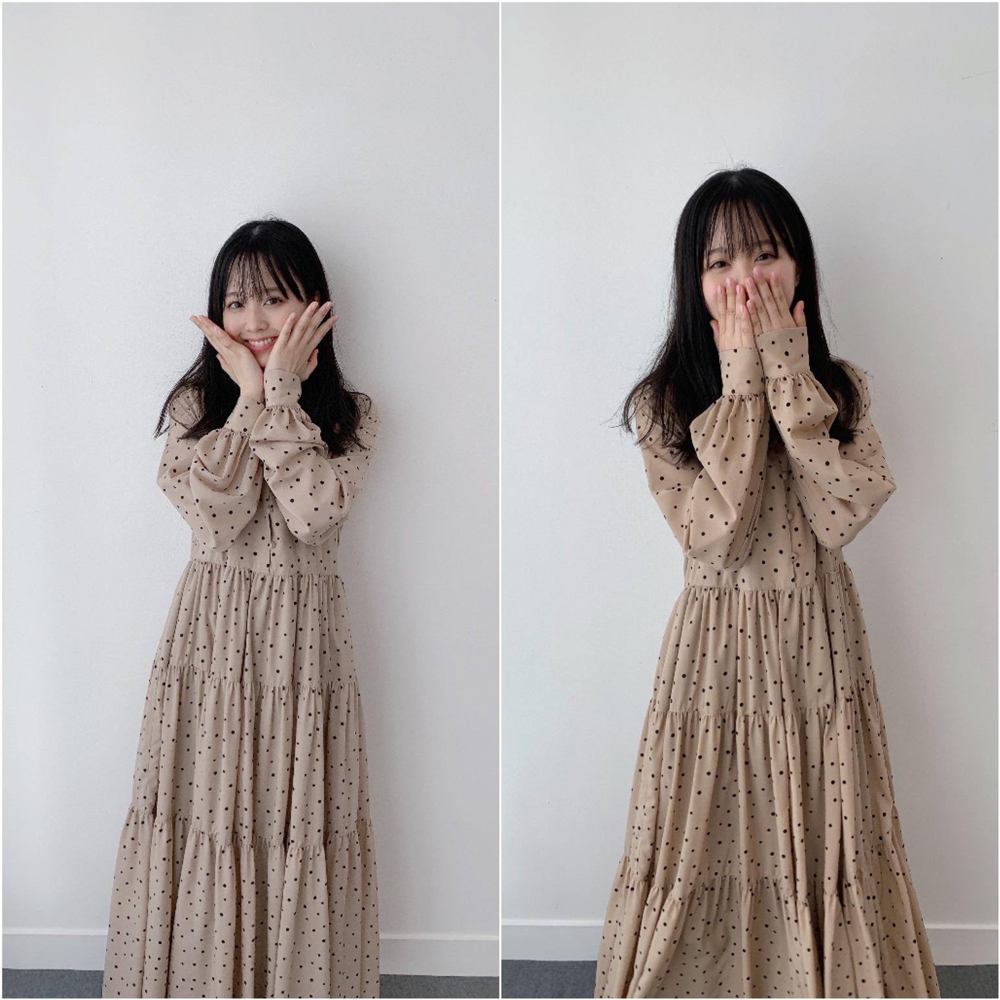
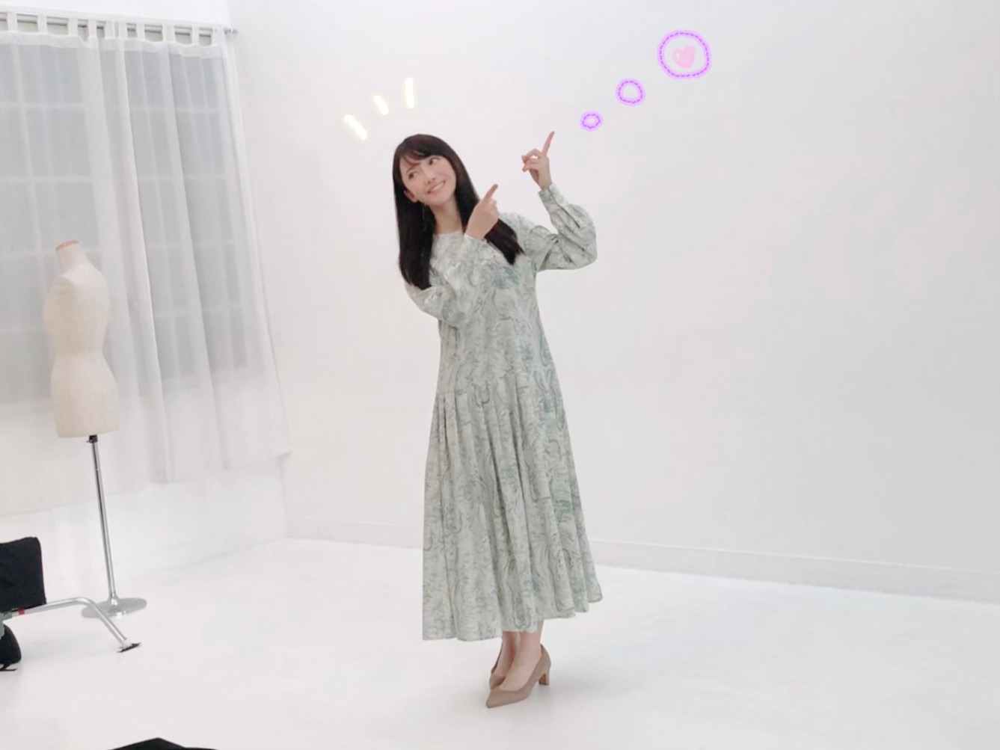

2020/1110Tueお疲れ様です！先輩方とのお話が主です。林瑠奈です。
乃木坂46、4期生の林瑠奈です。
神奈川県出身高校2年生17歳
華咲くセブンのティーンの林瑠奈です。
負けるなしょげるな林瑠奈、今日も1日頑張るな
(ピンポーン)


2020/1109Mon冬にまた。佐藤璃果
こんにちは~
乃木坂46 (新)4期生 岩手県出身
佐藤璃果です。

♡ベロアのワンピース♡
違う髪型ver.もあるのでまたいつか！
昨晩は、
｢らじらー！サンデー｣さん
初登場でした！ありがとうございました。
生放送も初めてですし、
乃木坂の先輩方以外とラジオで
トークをさせて頂くのも初めてでした。
お聞き苦しいところもあったかと思います。
吉村さんが言ってくださった
｢台本なんて見なくていいから！｣という言葉に救われました。
私は結構決められたことを全うしてしまう所があって、それで頭がいっぱいになるので、そう言っていただけて、少し余裕を持ってお話することが出来ました。
藤森さんの何を言っても受け止めてくださる優しさに救われました。
これを言ってもなんでも返して下さるんだろうなという安心感が本当に有難かったです。
緊張しましたが
いい経験になったかと思います( *´꒳`*)
聞いて下さった皆様、
関わってくださった皆様、
ありがとうございました。
全部はご紹介出来ませんでしたが、
沢山沢山、色々考えてメールを送ってくださってありがとうございました。
本番ギリギリまで大園さんのらじらー！を聞かせて頂いていて、あの優しい空気感を作って下さったから話す事が出来ました。
大園さんが気付いていないだけで、私は大園さんの優しさに救われている事あるんですよ！
鈴木さんに｢めんこいですねぇ！！！｣
と話し掛けようと思いました。
お会いしたら美しすぎて、
お疲れ様です。しか言えませんでした。
ううう。(´._.`)
❁
んだりか！！！
喋りか、黙りか、無理か
りか三段活用。
これから使っていきたいなぁと思います！
よろしくお願いします︎︎☺︎
~~~~~~~~~~~~~~~~~~
〇ananさん、11月4日 発売
乃木坂46全員登場回です。
待ち時間の編集部の方との
お話も楽しかったですし、
メイクさんに色々聞けたのも嬉しかったです！勉強になりました。
髪をふわふわにしてもらったことがポイントです。私も誌面を拝見させていただくのが楽しみです。
新4期生の企画は大盛り上がりで、新たな
一面をお互いに知れたいい機会でした。
ありがとうございました。

ドット柄可愛いですね
~~~~~~~~~~~~~~~~~~~
4期生単独ライブが無観客という形で
させて頂けることになりました。
16人で初めての4期生ライブです。
ものすごく緊張しています。
この話を聞いた時は鳥肌が立ちました。
無観客でも、見ていて下さる方を
元気にしたい、笑顔にしたいという気持ちは変わりません。
未だ前のような日常とは違う日々を
懸命に過ごす皆さんに、
このライブで皆さんに沢山の明るい感情を
届けられたらと思います。
誠心誠意頑張って参ります。
よろしくお願いします。
~~~質問~~~
〇雪だるま作りと雪合戦どっちが好きですか
雪だるまです⛄️
〇璃果ちゃんが今ハマってる曲はありますか??
最近またSEKAI NO OWARIさん
を沢山聞いています！
｢silent｣｢プレゼント｣などなど、、
あとはeillさん
｢踊らせないで｣｢片っぽ｣｢SPOTLIGHT｣
あとは緑黄色社会さんの
｢Mela!｣
〇璃果ちゃんが一番好きな髪型はなんですか??
結んだり、編み込みだったり、、
なんでも好き
〇ハロウィンは何をしましたか？
何もしてないんです...
皆さんのハロウィンエピソード
分けて欲しいです、、。
〇今度、仙台方面に2泊3日の日程で旅行行くのですが、東北出身の璃果ちゃんからオススメの場所や行った方がいい場所あれば教えてもらいたいです！よろしくお願いします。
仙台のひょうたん揚げがとても美味しいです！ぜひ食べてみてください~。
〇堀さんのインスタで新制服になったことを知ったのですが、璃果ちゃんは襟タイプと大きいリボンのタイプのどちらですか？
堀さんも、皆さんも本当に似合っていて素敵ですよね...。
私は、襟タイプです！

長袖の部分がないバージョン。
これからまた沢山制服の写真を載せられたらいいなぁと思います！
☆アホ毛が1本だけ飛び出ているのがポイントです！
〇いつもおうちではどのように焼き芋を作っていますか？
私のレンジは焼き芋モードがあるので、焼き芋モードで柔らかさがでるまで焼いています！
本当は炊飯器でやると美味しいらしいのですが、炊飯器を持っておらず...。
地元にいる時は、
キッチンペーパーを水で少し濡らして、
それでお芋を包んで、
サランラップにまたそれを包んで、
温めていました！
弱火でじっくり温めがオススメです！
~~~~~~~~~~~~~~~~~~~
〇10月31日、金川沙耶ちゃん
❁お誕生日おめでとう❁
優しくてオシャレで、ダンスもカッコよくて、笑顔がとっても素敵な、
さやんちゃんが大好きです♡
最近沢山話せるようになって、
写真を撮ったりと、幸せです！
今はとても、優しいお姉さん！という感じだし、さやんちゃんも、
同い年に見えなーい！って言ってくれてて！
んふふふ。
同い年同士、これからもよろしくね！
ご飯、ショッピング
いつか行けるの楽しみだあ♡
最近お互い付けあったあだ名で呼び合うの
とても好きです！
素敵な1年になりますように。
〇11月1日、渡辺みり愛さん、
❁お誕生日おめでとうございます❁
新4期生みんなが言っている通り、
白石さんの卒業コンサートにて、新4期生のところに来て教えて下さったり、
有難いお言葉を掛けて頂いたこと、
私もすごく記憶に残っています。
沢山教えて頂き、ありがとうございました。
みり愛さんの白いお肌が
本当にすごいなって思っています。
もっと色々なお話をしていければと思います。
素敵な1年になりますように。
~~~~~~~~~~~~~~~~~~~
明日はるなぴです。
外ハネ可愛いね！似合ってる❣️
~~~~~~~~~~~~~~~~~~
皆さんにとって
素敵な1日になりますように。

またね。
ブログも頑張るね。
いつもコメントや、ライブについての感想、雑誌の感想、ありがとうございます。
#40 りか
2020/1108Sunもこもこあったまってね ☺︎ 黒見明香(16)
ココを見つけてくださり ありがとうございます♪
乃木坂46 新４期生の黒見明香です。
すこーしだけ自己紹介させてください☺︎
♪:*:･･:*:･･:*:･･:*:･･:*:･･:*:･♪:*:･･:*:･･:*:･･:*:･･:*:･･:*:･♪
黒見 明香（くろみ はるか）
2004年1月19日生まれ 16才
香港生まれ・東京都出身です
あだ名： くろみん・黒見ちゃん
3の倍数9・6・3(くろみ)
と覚えてもらえたら嬉しいです♪
＊
↓頂いたコメントから
◎ 林ちゃんが番組で言ってた「黒見は全体的にヤバい」って意味が分かってきたぞ笑
バレちゃったかな...!?笑
小学校の頃、修行したら"忍者"になれると思って
こっそりリコーダーを持ってお風呂に入って、
『水とんの術！』をやってみたら、
"ピィーーー！"という音が響いて、溺れかけて
ものすご〜く 怒られました・・・Σ（ﾟдﾟll）
＊
先週、打ち合わせで「忍者」のお話をしたら、
苦笑いなさってました...汗
キスの手裏剣を投げたんだぁ〜♬
♪:*:･･:*:･･:*:･･:*:･･:*:･･:*:･♪:*:･･:*:･･:*:･･:*:･･:*:･･:*:･♪

-:-:୨୧:-:- 風邪ひいちゃダメだよ〜♪一緒に暖かくしようね✩︎⡱
⚫︎高い山はもう雪積もってますよ
⚫︎寒さには強い？
すっかり寒くなったねー！
もう地元に雪が近づいている方もたくさんいるなんて、
冬がそこまで来てるんだね(*´-`)
寒さはあまり強くないけれど、あなたのこと、乃木坂のこと...
考えると心がぽかぽかして、忘れられるよ〜☺︎
♬ *。♩*。♬
⚫︎ もう冬になりそうだけど、冬と言えば何ですかー？
冬といえば、ここのとこは、バースデーライブのイメージがあるけれど、
寒い季節に、一緒にアツくなれる時間✨
すっごく待ち遠しいよね (*ˊᵕˋ*)੭
そんなアナタに・・・
【 決定！乃木坂46 4期生ライブ 2020✨ 】
12月6日（日）「乃木坂46 4期生ライブ 2020」
決定しました〜！
⚫︎ライブがまた見たいと思ってたので、めちゃくちゃ嬉しいです！
⚫︎ひと足早いクリスマスプレゼント楽しみにしています。
４期生皆んなで、とっても喜びました♡
16人で一緒にライブに挑戦させて頂けることが本当に有難くて、今からもう、胸がドキドキしています✨
皆さんに、必ず素敵なライブをお届けできるように、そして安心して頂けるように！全力で頑張ります (. ≧ω≦)ﾉ
経験あるカッコいい４期の皆んなの足を引っ張らないよう、沢山教えて貰って、懸命に努めるね！
♪:*:･･:*:･･:*:･･:*:･･:*:･･:*:･♪:*:･･:*:･･:*:･･:*:･･:*:･･:*:･♪

-:-:୨୧:-:- 初めての"anan"撮影は、想像力が広がるとっても楽しい時間でした〜✨
【 anan2224号『女子の流行りモノ '20秋』】
11/4(水)発売のanan様では、全メンバー撮り下ろしを掲載して頂きました✩︎⡱
⚫︎一時間おしゃべりをしたんだ、楽しかった～?
新４期5人で、1時間たっぷり、いろんなブームについてお話しさせて頂いたよ☺︎
すっごく楽しくて、お互いのブームを試しあったりして
とても幸せな時間を頂きました(〃ω〃)
先輩方の"流行りモノ"も個性溢れてて、熟読しているよ〜✨
⚫︎くろみんのマイブーム。知らない人が見たらびっくりしただろうね笑
⚫︎えっ、この本ananよね？って表紙見返したり笑
初めての女性誌で、また新しい感じで、、
本当に畏れ多い、恥ずかしい気持ちもいっぱいですが...
あたたかく5人の話を聞いて下さり、盛り上げてくださった
編集部・スタッフの皆さまの愛に心から感謝しています((〃ω〃))
＊
でもね、"私のマイブーム"のおかげで
すこーし二の腕のぷにぷにが解消されてきた気がする・・・
よかったら、ぜひチェックしてみてくださいね♪笑
♬ *。♩*。♬
⚫︎anan読みましたよ。「焼き小籠包」ってどんな感じ？
小籠包の肉汁と具材を包む皮が、焼いてあって
外は香ばしくて、中はジューシーですごくオススメだよー！
全国の中華街などに行く機会があったら、ぜひ試してみてね (*ˊᵕˋ*)੭
⚫︎ いいドライヤー見つかってよかったね。
そうなの〜！このあいだ、弓木奈於ちゃんに私のドライヤー貸してあげたの。
「めっちゃ髪綺麗になったぁー✨」て喜んでくれました☺︎
髪長い子には、ぜひぜひオススメだよ〜！
♪:*:･･:*:･･:*:･･:*:･･:*:･･:*:･♪:*:･･:*:･･:*:･･:*:･･:*:･･:*:･♪

-:-:୨୧:-:- 名前順に、隣の璃果ちゃん(マネキン)をイメージして、いっぱい心のハートを飛ばしたんだよ♡フフ
⚫︎ananくろみん達のファッションもお洒落だね～オフショット、あったりしますか?
実は、こんな感じだったんだよ〜ヾ(･ω･*)o
編集部の方が、
" 笑うと幼くなるところ、左右のえくぼが違うところの『ギャップ』が良いね☺︎ "
と優しくお話ししてくださって、
今まで16年、えくぼの違いに気づいてなかったので、
さすがプロの方は凄いなぁ...✨有難いなぁ...と思いました。
＊
このお仕事は、気付いてない自分のことを知っていく「自分を知る旅」のような感じもあるんだなぁ...て思いました。
ずっと"...運動下手だし、赤点多いし、絵も下手だし..."
と思うことばかりだったけれど、、、
「あなたにしかない個性」「そのままで良いんだよ」って
言って頂いた、教えてもらった気がしています。。。
＊
だから、あなたにも、それを伝えたいなぁ...てすごく思います。
"やっぱり自分の人生に、こんな良いこと起こるはずがなかった"
って諦めそうになった経験があるから、
伝わると良いなぁ...
がっかりしてるあなた、悔しい思いに呑まれそうになってるあなたと
手を取り合って、一緒に、坂を登りたいです。
説明下手でごめんね><
頑張っているあなたに、辛い思いをしているあなたに、
どうか、少しでも伝わりますように...✩︎⡱
＊
【 乃木坂46リズムフェスティバル✨】
⚫︎ついに！乃木フェスに新4期生実装ですね！めちゃくちゃ楽しみ
⚫︎明日からananコラボガチャがくるから絶対当てたいなー
明日11月9日(月)から、
リズムフェスティバルに新４期生も登場させて頂きます〜 (*ˊᵕˋ*)੭やったぁー！
♬ *。♩*。♬
⚫︎初めての乃木フェス用のカードの撮影は緊張しましたか？
とっても緊張しました、でもゲーム大好きなので、プレイしてくれるあなたのことを思い浮かべながら、ドキドキ撮って貰ったよ〜✨
『anan×乃木フェス』コラボも、ぜひ楽しんでねー!!
⚫︎ くろみんは乃木フェスはしますか？音ゲーは得意ですか？
うん！イベントもやろうかなって思ってるよ〜♪
実は、そんなに得意じゃないのだけど\(//∇//)\
うまくやるコツとかあったら、ぜひコッソリ！？教えてくださいね☺︎笑
♪:*:･･:*:･･:*:･･:*:･･:*:･･:*:･♪:*:･･:*:･･:*:･･:*:･･:*:･･:*:･♪

-:-:୨୧:-:- とってもステキな新制服✨上着を脱いだらこんな感じだよ〜☺︎（寝起きでごめんなさい〜）
【 新しい制服✨ 】
⚫︎高校生クイズで新制服がお披露目されたね〜！
⚫︎新制服のデザイン 可愛いよね！来てるの早くみたい！！！笑
中はこんな感じで、首元が『襟バージョン＊リボンバージョン』があって、爽やか、色もとっても可愛いですよね〜♡
寝起きぼーっとしてる時ので、まったり目がトロンとしてますね..（´-`）.｡oO
上着を羽織った正装はまた今度、載せさせて下さいね✨
⚫︎「明日がある理由」自分は優しく応援してくれてる歌って感じたけど、くろみんはどう思いますか？
やさしくて、勇気づけられるステキな応援ソングですよね〜♪
サビの片足トントントンって歩くところも可愛いなぁってキュンとしました✩︎⡱
私も学校頑張ろうっ、いつか応援ソングを歌えるよう頑張ろうって心から思いました☺︎
大好きな一曲になりました (*ˊᵕˋ*)੭
【 ノギザカスキッツACT 2 ♬ 】
⚫︎乃木坂スキッツ第2弾おめでとーーー！毎週リアタイで頑張ってるのでマジで嬉しかった！
⚫︎くろみんの悟空のモノマネを見てくろみんを応援したいって思ったよー。
いよいよ明日深夜から、2ndシーズンスタートですね✩︎⡱
本当にありがとう><
皆んなの存在で、不安なことも勇気がわいて、頑張れます✨
⚫︎挑戦する事が大事なので、結果滑ったとしても大丈夫です。
⚫︎もっと自分自身の「喜怒哀楽」を表に出してった方が、これからもっと成長できると思うよ？？
たくさんのアドバイスやコメント、ホントにありがとう！
皆んなのアドバイスを大事に胸に刻んで、ACT 2 も全力で楽しく頑張ります☺︎
新しい姿をお届けできますように・・・✨
いっぱい楽しんでもらえますようにー！エンジン全開で行きます (*ˊᵕˋ*)੭笑
♪:*:･･:*:･･:*:･･:*:･･:*:･･:*:･♪:*:･･:*:･･:*:･･:*:･･:*:･･:*:･♪

-:-:୨୧:-:- 白石麻衣さんの卒業コンサートの日のちょこっと舞台裏・食べ物編だよ〜☺︎笑
【 卒業コンサート番外編・食べ物☺︎ 】
https://blog.nogizaka46.com/newfourth/smph/2020/06/056863.php
ブログやお手紙で、たくさんのコメントや感想送って下さり
本当にありがとうございます✩︎⡱
今回、初めてコメントしました！というあなたも、
毎日"おやすみなさい"を伝えて下さるあなたも、
大切な時間を使ってお話しして下さり
本当にありがとうございます✨
あなたに出逢えた奇跡に、感謝しながら、
大事に、一つずつ全部読ませて頂いています((〃ω〃))
皆さんのことを知ることが出来る、
私の１日の中で『１番幸せな時間』です♩
直接お話しできる時が、 待ち遠しいです✩︎⡱
＊
週末のんびり過ごせたよ〜という方も、
寒い日が続いて、仕事や勉強が忙しかったり、
なんだか体調イマイチだよー、疲れちゃったよーって方も
本当に、今日も一日 お疲れ様でした✩︎⡱
きっと心も、身体も、しんどい時もあるかと思います。。
どうぞ、皆さんが 少しでも
ひとときリラックスできますように...✩︎⡱
と願っています(*´-`)
初めて会える日を、楽しみに待っています♪
＊
明日は、今夜のらじらー！頑張る璃果ちゃんですよー♬
読んでくださり、本当にありがとうございます☺︎
次回も、会えたら嬉しいなぁ✨
またねヾ(･ω･*)
くろみはるか☺︎
☆ 本日のあなたのラッキーナンバー：❶ と ❺
♪:*:･･:*:･･:*:･･:*:･･:*:･･:*:･♪:*:･･:*:･･:*:･･:*:･･:*:･･:*:･♪
・
・
・
＜ちょこっとアンコール♬笑＞
すごく長いので、時間ある時にでも☺︎笑
♬ *。♩*。♬
⚫︎劇場版「鬼滅の刃」無限列車編は観たかな？まだなら是非お薦めします(*^^*)
⚫︎鬼滅のテーマは想いを「つなぐ」事、乃木坂と一緒だよ。
⚫︎ダブルピースの変形バージョン、"ひめたんビーム"を受け継ぎましょう。
⚫︎『〇〇のWピースは世界を救う』でおなじみの元乃木坂メンバーを知っていますか？
⚫︎黒見ちゃんのダブルピースを集めるのを趣味にしようかと思うくらい好きです。
⚫︎ ４期生は「夜明けまで強がらなくていい」だったね！
ちなみに...黒見ちゃんは4列目の真ん中で、裏センターだったね！
○よく、見つけてくれてありがとうー！
○白石麻衣さん♡が"最初は笑顔が苦手だった..."とお話されてたように、ゆっくり、少しずつ練習できたらいいのかなぁ...て思っているよー☺︎
＊
♬ *。♩*。♬
⚫︎学校でのお話もっと聞きたいです！もうすぐ歌のテスト、コツとかあれば教えてください！
♬ *。♩*。♬
⚫︎後輩からは、「黒見先輩」「明香先輩」もしくは他になんと呼ばれたいですか？
⚫︎役に立てるような人になりたくて、乃木坂46に入りたいです。
⚫︎施されたら施し返す恩返しです
⚫︎自己紹介は毎回書かなくてもいいんじゃないかな？こんな事言ってごめんね...
⚫︎沢山書きたいことがあるから長くなっちゃうのはわかるけど私は短くて読みやすい方がいいなって思う。たまに短くて読みやすくしてみたらどうかな？
⚫︎毎回のラッキーナンバーはどうやって決めてるの？笑
＜ゲームコーナー✨＞
⚫︎ プロスピのアニバーサリーのためにエナジーを溜めてたから選択契約書は引かないことにしましたよ！
○エナジー集めとアニバーサリーお疲れ様！私は60連して福袋で選択契約書ももらう予定だよー！
⚫︎ スターロードは終わりましたか？
○終わってアニバーサリー第2弾のSランク契約書獲得したよ〜！
⚫︎ プロスピやっていて初めての覚醒だったから嬉しいよ
○覚醒できると嬉しいよね！
私は覚醒した選手2人しかいないからもっと覚醒できたら良いなと思ってるよ〜
⚫︎ 黒見ちゃんのアニバの結果も楽しみ！
俺はアニバ引くの我慢して、OBで日ハムの選手狙うことにした！
○OBも気になるけどアニバーサリーの方を引きたいからアニバーサリーの方にするよー！
⚫︎ あつ森のお話です！カボチャの馬車をもらったり、レシピを教えてもらえました
♬ *。♩*。♬
模試や連勤、繁忙期、最終便担当頑張ってるよー！82km歩いたm体育祭で賞獲ったよー！受験勉強ラストスパート、後輩の面倒みるの頑張るよ〜というお話もありがとう！今回残念だったけど、次も頑張るね！という報告もありがとう！いろいろ大変だと思うけれど、一緒に頑張ろうねー (. ≧ω≦)ﾉ
＜お誕生日おめでとうございます✨＞
◎ 11月10日は、阪口珠美♡さんのお誕生日ですね♪
絶対笑顔になれる"たまトレ"！大好きで、４期の皆んなと一緒にトレーニングさせていただいています。伊藤理々杏さん♡とのおうちフィットネスもヘルシーで美しくて、明るい笑顔と、バレリーナの綺麗な姿勢がカッコよくて、憧れています。
おめでとうございます！どうぞ楽しい一年になりますように✩︎⡱
そして、お誕生日を迎えるあなたへ・・
✨HAPPY BIRTHDAY✨
どうぞ素敵な一年になりますよう✩︎⡱
♪:*:･･:*:･･:*:･･:*:･･:*:･･:*:･♪:*:･･:*:･･:*:･･:*:･･:*:･･:*:･♪
ここまで読んでくださったアナタ、ほんとうにありがとう♡
またねヾ(･ω･*)
2020/1107Satほっぺた赤くなったよ顔☺︎弓木奈於
こんにちは！
ページをクリックしてくださり、ありがとうございます✨
乃木坂46 新4期生
京都府出身
弓木奈於（ゆみきなお）ですᕙ( ˙-˙ )ᕗ
(●･̆⍛･̆●)
『沈黙の金曜日』が終わった後は
ほっぺたが赤くなります。
昨日家に帰って、生放送中お話ししていてわからなかった事を調べたら...
検索結果が全然出てこないんです！！
〝お話しした事には嘘が混ざっていたのか...？〟
〝何が嘘で何が本当なんだ...？〟
と、頭の中がこんがらがっている今日この頃です
む。(●･̆⍛･̆●)

---------- ｷﾘｶｴ ---------
『乃木坂46 4期生ライブ 2020』
2020年12月6日（日）、配信ライブの開催が決定いたしました✨
16人でライブをさせていただける事、心の底から感謝の気持ちでいっぱいです。
感謝の気持ち、不安な気持ち、今思っている事をパワーに変えて毎日過ごしたいです。
そして、
見てくださる皆様と一緒に、心に残るライブが出来るように
この上ないほど頑張りたいです。
是非、よろしくお願い致します( *ˊᵕˋ ) ⁾⁾
---------- ｷﾘｶｴ ---------
11月4日発売のananさん
に新4期生も掲載していただいております( *ˊᵕˋ ) ⁾⁾

おいしいパンをいただきましたԅ(¯﹃¯ԅ)
今回、新4期生5人で座談会をさせていただいて皆がハマっている事だったり美容についてお話しさせていただきました⸜(´ ˘ `∗)⸝
どのページもワクワクしながら拝見しました！
美容の事についてたくさん知る事が出来るのが凄く幸せです✨
---------- ｷﾘｶｴ ---------
舞台「『ナナマルサンバツTHE QUIZ STAGE O」
キャラクタービジュアルが公開となりました✨
私はセーラー服を着せていただきます˙˚⸜(* ॑ ॑* )⸝˚˙
そして、ショートカット姿の深見真理さんを見てびっくりしました！
ショートカットもロングヘアもとてもお似合いな鈴木絢音さん...✨
11月10日発売の写真集もとても楽しみです☺️
---------- ｷﾘｶｴ ---------
明日は黒見ちゃんです！
黒見ちゃんと話したいこといっぱいですよ( ｰ̀֊ｰ́ )✧
〜ちょいっと、今思っている事〜
伊藤かりんさんのYouTube、お食事動画が大好きで
たった今も見ているのですが...
お肉食べたい...
海鮮食べたい...
チュロス食べたい...
外食をあまりした事がないので、食べてみたいものが沢山あります！！
皆と一緒に食べたいなぁ...なんて思っている現在でした(◦ˉ ˘ ˉ◦)笑
最後まで読んでくださり、ありがとうございました☺️
寒さも徐々に本格的になりそうなので、皆さんお体に気をつけてお過ごしくださいね✨
本日もありがとうございました！
2020/1106Friマフラーいつからですか？ 松尾美佑
すっっっっごい寒がりなんですよ。
寒すぎて困ってます最近
そんな今日は漢検を受けました〜
仲間な人も多いのかな？と思ってます
難しかった｡です。
( ･᷄-･᷅ )
千葉県出身
高校2年生
16歳の
松尾美佑です¨̮
なんか、もっとしっかり自己紹介したいなぁって毎回思うんですけど
何を紹介しようか迷っちゃって迷っちゃって。
何がいいですかね？
気が向いたらたすけてください。

髪型悩み中
お返事からにしますね ꪔ̤̥
✽ ミュウちゃんは「朝」と「夜」どっちが好き？
多分夜行性です( Ꙭ)
✽ ショートケーキの苺はいつ食べますか？
私、1番最初に食べちゃうんですよね。
✽ 甘栗食べてる美佑ちゃんですがケーキで1番好きなのはモンブランですか？
タルトが好きです！！
✽ ブログに書いてた見たい映画って何ですか？
あ！言ってなかったですね！
アリスです！アリス・イン・ワンダーランドの方！
あの不思議な世界が大好きなんです
実はハロウィン過ぎた今も見れてないです
( ᵕ ᵕ̩̩ )
✽お勧めのシャンプー、リンス、くし、を教えてほしいです！
くしじゃなくてブラシになっちゃうんですけど、タングルティーザー良きです☺︎
シャンプー達は探し中です！
✽ 最近家で何してますか？
今日の漢検までは四字熟語書いてました！
結構楽しかったのでこれからもやりたいと思います(気が向いたらね)
✽ 憧れの衣装や着てみたいなって思う衣装はある？？
白石さんの卒業コンサートで2期生さんが『バレッタ』の時に着ていた衣装が凄い好きです！ちょっと大人っぽくて、ベルトがキラっとしていて、生地も好きだし、色合いも形も回った時のスカートのふんわり具合も全部好きです！
あと2018年の紅白歌合戦の『帰り道は遠回りしたくなる』の衣装もすっごく好きです！
まだまだいっぱいあります
衣装は近くで見たり、着させて貰った時に想像以上に細かくて綺麗で毎回びっくりします！たくさんの衣装に出会いたいなって思います☺︎
11月4日に発売されました！
ananさんに44人、全員で掲載して頂き私達新4期生も参加させて頂いています！
5人でハマっていることについて話したり、
初めて撮影でネイルをして貰ったり、
凄く楽しかったです！

本当に綺麗な色のネイルでした！
明日は〜
なお〜〜〜〜〜〜〜
寒いね☃︎
また5日後！
ミュウでした¨̮
ばいっっっっっっっ( Ꙭ )/''